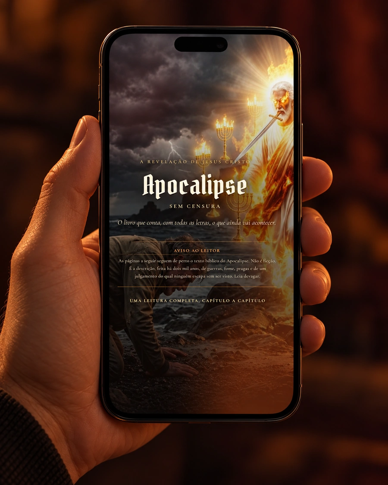

Abra os comentários de qualquer vídeo sobre o Apocalipse e você vai ler a mesma pergunta, repetida dezenas de vezes: "alguém mais em 2026?". As pessoas veem o noticiário e sentem que alguma coisa do livro está acontecendo. Algumas com medo, outras com esperança. Quase todas com a mesma dúvida.
O problema é que quase ninguém leu o Apocalipse inteiro. A gente conhece pedaços: o 666 de um vídeo, os cavaleiros de um sermão, a data do fim que chegou pelo WhatsApp. Tem gente com anos de igreja que nunca ouviu o livro explicado do começo ao fim. E, sem o texto inteiro, qualquer notícia vira profecia e qualquer data parece certa.
O Apocalipse Sem Censura foi escrito para resolver isso. Ele percorre os 22 capítulos na ordem em que João narra a visão, cena por cena, com os versículos na tradução de João Ferreira de Almeida e o contexto que os primeiros leitores tinham na cabeça quando ouviram falar da besta, do número e da grande cidade.
Em boa parte dos capítulos, um quadro chamado "Se fosse hoje" imagina como aquela cena poderia se parecer com o nosso tempo. Não é previsão nem data marcada: é um exercício para você ler as notícias com o texto na mão, e não com o medo.
Você não precisa ser teólogo nem ter lido a Bíblia antes. Precisa de algumas noites e da disposição de ler o que está escrito, sem cortes e sem o filtro de denominação nenhuma.